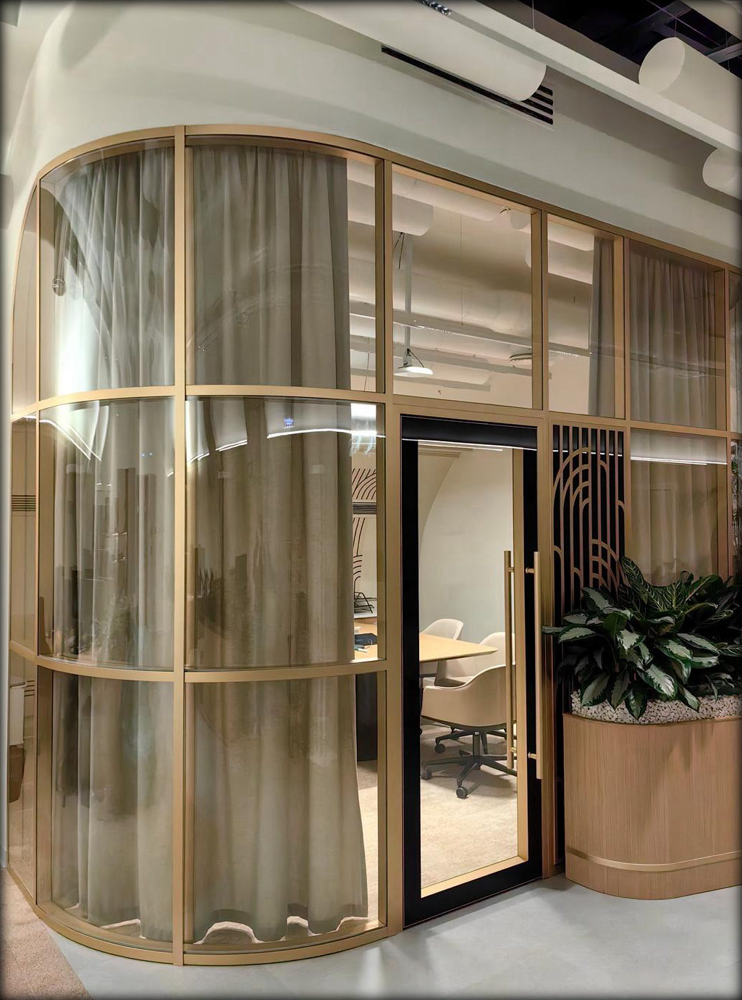
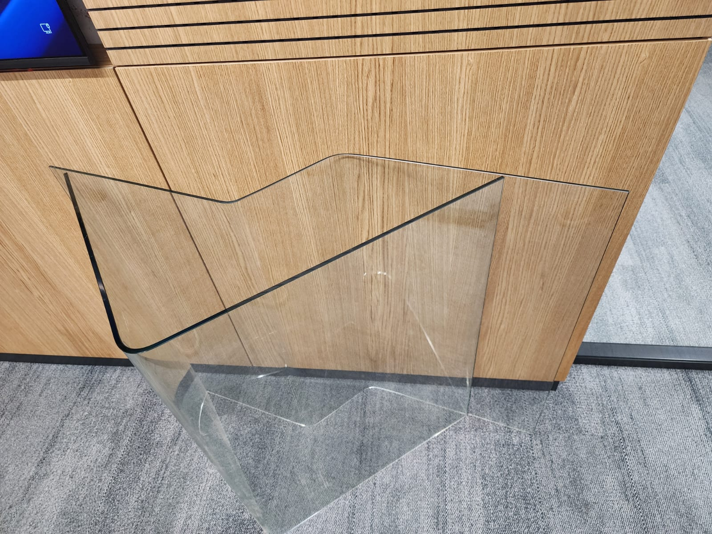
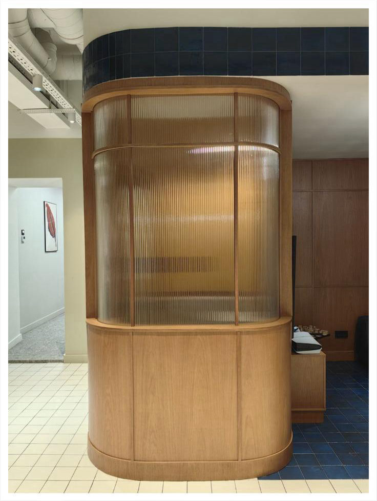

Вдохновение
Реализованные дизайнерские решения





Воплощаем смелые идеи в стекле. Реализуем нестандартные конструкции по вашим проектам — от радиусных перегородок до смарт-стекла и индивидуальной печати.
Моллированные стёкла любых радиусов и гнутые под углом 90° — для выразительных интерьеров.
Печать, пескоструй, тонировка, рифлёное и матовое стекло — точное попадание в концепцию.
Умное стекло, меняющее прозрачность, — технологичный акцент в проекте.
Подскажем по материалам, узлам и реализуемости решения на этапе проекта.
Контроль качества и сроков на всех этапах — без потерь смысла авторской идеи.
Аккуратная установка с вниманием к деталям и примыканиям к отделке.


Пришлите эскизы или дизайн-проект — обсудим материалы, узлы и сроки реализации.
Обсудить проект